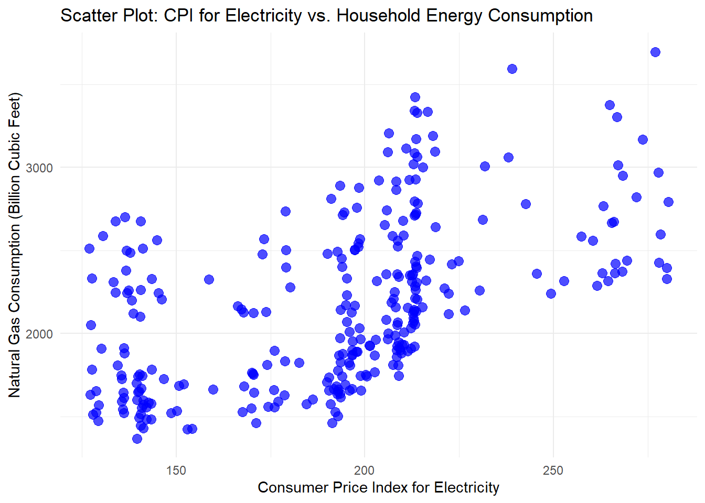
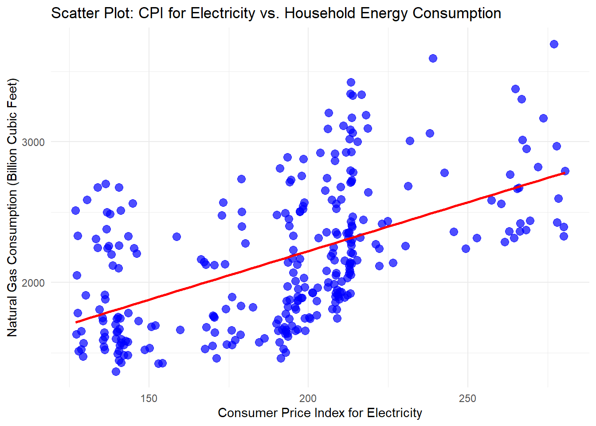
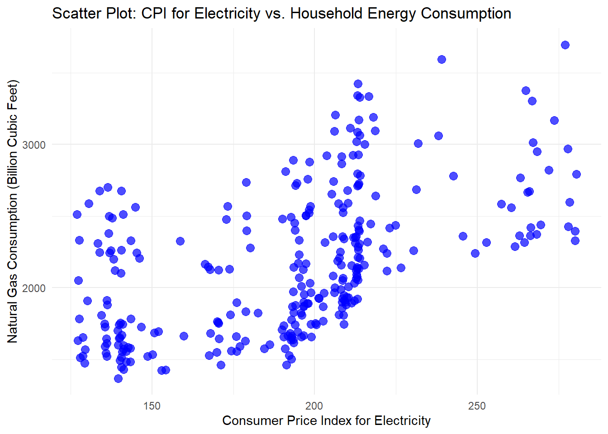
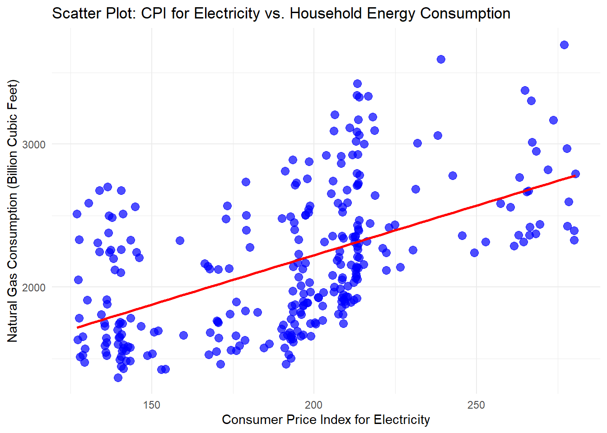
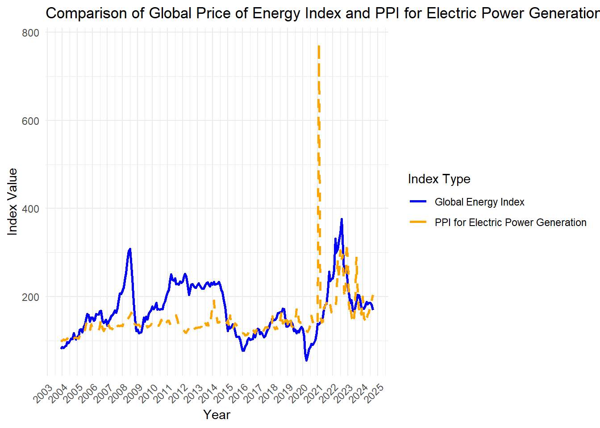

The Global Price of Energy Index (PNRGINDEXM) is a composite measure of global energy prices, using 2016 as the base year (index = 100). Published by the Federal Reserve Bank of St. Louis, with data from the International Monetary Fund (IMF), it provides insights into global energy price fluctuations, tracking key energy sources such as oil, natural gas, and coal. This index is updated monthly, reflecting the latest changes in global energy markets, allowing businesses, policymakers, and investors to make informed decisions about energy-dependent sectors.
The data is significant for its role in guiding economic policy, as energy prices have a direct impact on inflation, business costs, and global economic stability. Rising energy prices can signal inflationary pressures, while declines can reflect decreased demand or increased supply. Understanding trends in energy prices helps businesses manage costs, governments formulate energy and fiscal policies, and investors adjust strategies in energy-dependent markets. Tracking this index is critical in today’s interconnected and energy-driven global economy.
The specific data set came from: https://fred.stlouisfed.org/series/PNRGINDEXM
The data for the Global Price of Energy Index (PNRGINDEXM) is published by the Federal Reserve Bank of St. Louis on its FRED platform, one of the most trusted sources for economic data in the U.S. The underlying data is provided by the International Monetary Fund (IMF), a global financial institution focused on international economic stability. The IMF monitors global price indices for energy, which include oil, natural gas, and coal, and aggregates them into this index. Their methodology ensures reliable, high-quality data for economists and policymakers.
The Global Price of Energy Index measures the fluctuations in global energy prices relative to a base year, 2016. This index covers key energy sources like oil, natural gas, and coal, giving a composite view of energy price trends worldwide. The index is crucial for understanding how energy prices affect broader economic variables like inflation, production costs, and consumer prices. It also helps to gauge market reactions to geopolitical events and shifts in supply-demand dynamics.
The index is updated monthly, providing near-real-time insights into global energy prices. This frequent updating allows the data to reflect recent events, such as oil supply cuts or demand surges due to seasonal changes. Monthly data ensures that stakeholders—such as governments, businesses, and investors—can make timely decisions based on current energy prices. The availability of historical data also makes it easier to analyze long-term energy trends and to make future projections.
The index is global, meaning it aggregates energy price data from major markets worldwide, including the U.S., Europe, Asia, and the Middle East. This gives a comprehensive view of how energy prices evolve across different regions and economies. Energy prices can be influenced by various global factors, including regional conflicts, trade policies, and local demand-supply imbalances. Therefore, tracking a global index allows for better understanding of energy price trends, as local indices might not capture broader international influences.
Tracking global energy prices is vital due to energy’s foundational role in every economy, from fueling transportation to powering industries. Fluctuations in energy prices affect inflation rates, consumer purchasing power, and even the cost structures of businesses. Policymakers monitor energy prices closely as changes can prompt adjustments in monetary and fiscal policies. Investors and financial analysts use this data to anticipate shifts in market sectors dependent on energy, such as utilities, transportation, and manufacturing.
The IMF calculates the index by aggregating prices for several energy sources, including crude oil, natural gas, and coal, and adjusting them to a common base year, 2016. This base year is assigned an index value of 100. Movements in the index reflect the weighted average of price changes across different energy sources. The methodology ensures consistency and comparability over time, providing a clear snapshot of energy price trends regardless of which energy source is driving the change.
Global Energy Index Value: The raw monthly index number, giving the price level relative to 2016.
Percentage Change: The month-over-month or year-over-year change in the index, signaling trends in energy price inflation or deflation.
Specific Energy Prices: Breakdown of prices for individual energy sources like oil, natural gas, or coal that feed into the overall index.
Correlation with Macroeconomic Indicators: You can compare the index against variables like inflation, GDP growth, or commodity price indices to identify economic relationships.
Economic Policy: Policymakers use the index to gauge energy’s contribution to inflation, which can influence decisions on interest rates and taxation. Business Costs: Companies, especially in energy-intensive sectors like manufacturing or transportation, track energy prices to adjust production costs and pricing strategies. Environmental and Energy Policy: Governments can use the index to make decisions about subsidies or investments in renewable energy alternatives when traditional energy prices rise. Investment Strategies: Investors and analysts use the index to identify trends in energy stocks and commodities, helping them to time trades and manage risk in volatile markets.
The Consumer Price Index for All Urban Consumers: Energy (CPIENGSL) measures changes in energy costs for urban households in the U.S., with data sourced from the Bureau of Labor Statistics (BLS). This index tracks price fluctuations for energy-related goods like gasoline, electricity, and fuel oil, using 1982-1984 as the base period (index = 100). Updated monthly, it reflects short-term and long-term trends in energy inflation, making it essential for assessing the impact of energy prices on consumer expenses and inflation.
The CPI: Energy index provides insights into how energy prices affect the broader economy, especially for policymakers who need to gauge inflation and adjust monetary policies. Businesses use it to manage energy costs, while households monitor it to understand shifts in their living expenses. Energy prices, often volatile, have a direct impact on sectors like transportation, utilities, and manufacturing, making this index a vital tool for evaluating economic stability and forecasting inflationary pressures.
Link to the data set is: https://fred.stlouisfed.org/series/CPIENGSL
The data is published by the Federal Reserve Bank of St. Louis on the FRED platform, with the data source being the U.S. Bureau of Labor Statistics (BLS). The BLS is responsible for calculating and maintaining the Consumer Price Index (CPI), which covers various categories including energy. This index is widely used to track inflationary trends and assess cost-of-living changes. Economists, businesses, and policymakers rely on the BLS’s standardized methodology for accurate pricing data.
The Consumer Price Index: Energy measures changes in the price of energy goods and services consumed by urban households, including items like gasoline, fuel oil, and electricity. The index represents the average price change for these energy products, relative to a base period of 1982-1984, where the index is set to 100. This helps assess how energy prices have increased or decreased over time. It’s important because energy is a volatile component of inflation, often causing price shocks that impact household budgets and business costs.
The index is updated monthly, providing regular insights into how energy prices change from one period to the next. This timely data allows for the analysis of short-term trends, such as seasonal increases in fuel prices, as well as long-term trends driven by changes in energy production, consumption, and market disruptions. This frequency ensures the index captures immediate responses to global energy supply issues, regulatory changes, or geopolitical factors that can influence prices.
The CPI: Energy focuses on urban consumers in the United States, representing about 88% of the U.S. population. Urban consumers typically face more price volatility for energy due to transportation costs, infrastructure, and regional market conditions. Energy prices vary widely by region, but the national average presented in this index gives a broad sense of how energy prices are trending across the country. While it doesn’t cover rural areas, the index provides a useful benchmark for the overall energy cost landscape.
Energy prices are a crucial economic factor, as they directly affect household expenses, business operations, and the broader economy. The CPI: Energy is used to track inflation, especially core inflation when energy is excluded. Policymakers monitor this index to assess the impact of energy prices on the economy and to guide decisions related to energy policy, monetary policy, and fiscal interventions. For businesses, understanding energy price trends is essential for managing costs, pricing strategies, and investment decisions.
The BLS calculates the CPI: Energy by tracking the prices of specific energy-related goods and services consumed by urban households. These include gasoline, electricity, natural gas, and fuel oil. Prices are collected from thousands of retail outlets across the country, and adjustments are made for seasonal variations. The index is then reported relative to the base period (1982-1984), making it easy to compare how current energy prices stack up against historical trends.
Index Value: Represents the price level relative to the 1982-1984 baseline. Monthly Percentage Change: Measures the short-term variation in energy prices.
Year-Over-Year Change: Shows the longer-term trends in energy inflation.
Energy Subcategories: Prices of specific items like gasoline, electricity, or natural gas, which can help break down the broader energy inflation trends.
Consumer Impact: Higher energy prices directly increase household expenses, especially for essentials like heating, cooling, and transportation.
Inflation Tracking: Energy is a volatile component of inflation, and understanding its trends helps policymakers and economists gauge overall price stability.
Business Costs: Energy prices are a major component of production costs for many industries, affecting profitability and pricing strategies.
Policy Development: The index informs decisions on energy policy, tax incentives, and subsidies aimed at mitigating the impact of energy price shocks on consumers and businesses.
Expanding Data Scope and Initial Analysis
The Industrial Production Index (INDPRO) measures the output of manufacturing, mining, and utility sectors within the U.S. economy. This index is especially valuable in understanding the energy needs of industrial sectors since these industries consume a significant amount of electricity and fuel. By observing industrial output changes, analysts can infer variations in energy demand within manufacturing-heavy regions. Industrial output has been closely tied to economic cycles, with demand peaking during growth phases and dropping during recessions.
Since energy-intensive industries like mining, steel, and chemical production drive industrial output, the INDPRO index serves as a useful proxy for understanding energy requirements across these sectors. Increases in industrial production often correlate with higher energy consumption, particularly for coal, natural gas, and electricity, as companies ramp up production to meet demand. This trend also emphasizes the importance of tracking INDPRO to assess the ripple effects on energy markets and forecast shifts in energy consumption.
For instance, fluctuations in this index during periods like the COVID-19 pandemic reflected changes in energy usage patterns due to shutdowns and recovery stages. Policymakers, energy providers, and market analysts leverage INDPRO data to understand how industrial demand impacts overall energy consumption and to align energy resources accordingly. This index helps estimate industrial sector contributions to national energy consumption and provides a basis for energy policy. Explore INDPRO on FRED, https://fred.stlouisfed.org/series/PCU221110221110P
The Consumer Price Index (CPI) for Electricity provides an insight into the cost of electricity for U.S. urban consumers. As part of the larger CPI that tracks inflation, this index focuses specifically on residential electricity costs, reflecting how price changes affect household energy expenses. It’s especially relevant for understanding inflation’s impact on essential services like energy, which is often a large part of a household’s budget. Rising electricity prices directly influence consumer purchasing power and spending behavior, as more income is diverted toward utility costs.
Monthly changes in the CPI for Electricity are important indicators of broader economic shifts. For example, factors like extreme weather, fuel price volatility, and infrastructure issues can drive up electricity costs, often disproportionately affecting lower-income households. Observing CPI trends for electricity over time also helps policymakers assess how well existing energy subsidies or assistance programs are working to offset these increases for consumers.
Since residential energy expenses reflect household cost-of-living pressures, tracking the CPI for Electricity helps analysts and the government understand trends in consumer spending and inflation. With growing attention on energy efficiency and renewable energy sources, monitoring these costs also highlights the potential impact of renewable energy transitions on consumer pricing. Explore CPI for Electricity on FRED
The Natural Gas Consumption series from FRED provides monthly data on the U.S.’s natural gas usage, measured in billion cubic feet. Natural gas is a critical component of the U.S. energy mix, used heavily in heating, electricity generation, and industrial processes. This variable helps track both seasonal and overall trends in natural gas demand, which tends to peak during winter months when heating needs rise. High levels of natural gas consumption also signal industrial activity, as many manufacturing processes rely on it for fuel and heating.
Natural gas is often viewed as a bridge fuel in the transition to renewables, given its lower carbon footprint compared to coal and oil. Monitoring its consumption can reveal trends in energy efficiency, especially if consumption declines while industrial output remains stable, suggesting increased energy efficiency. Additionally, tracking consumption levels can provide insights into how policy changes, weather patterns, and fuel substitution impact demand for natural gas in the U.S.
For instance, the natural gas market is highly sensitive to global supply disruptions, as witnessed during recent geopolitical events that caused volatility in fuel prices. As natural gas continues to play a key role in the energy sector, data on its consumption aids in policy formulation and planning to ensure a stable, cost-effective energy supply.
Link: https://fred.stlouisfed.org/series/NATURALGAS
The Producer Price Index (PPI) for Electric Power Generation records the price changes for producers in the electric power generation industry, capturing monthly fluctuations in the cost of producing electricity. This index is useful for analyzing price trends upstream, which ultimately affect consumer electricity costs. As energy markets evolve, the PPI for Electric Power Generation reflects how factors like fuel costs, regulatory changes, and technology influence electricity production costs.
Changes in this index have a cascading effect across the energy supply chain, with higher producer prices typically translating to increased retail prices for consumers. By examining the PPI, stakeholders can gauge the impact of input costs like fuel and maintenance on electricity production. This data is essential for utility companies planning infrastructure investments and for policymakers interested in energy security and cost management.
The PPI for Electric Power Generation is closely watched during times of fuel price volatility, as fluctuations in oil, coal, and natural gas prices significantly impact electricity production costs. This makes the index a valuable tool for anticipating shifts in energy affordability and for planning energy strategies that balance economic needs with environmental goals. Explore PPI for Electric Power Generation on FRED
###Industrial Production: Energy, Total (IPB50089S) The Industrial Production: Energy, Total index (IPB50089S) measures the production of energy resources, including coal, oil, natural gas, and renewable sources. It offers a comprehensive snapshot of energy output across different types of fuel, making it a key metric for analyzing shifts in the U.S. energy portfolio. By tracking this index, analysts and policymakers can identify trends in energy source utilization, such as the growth of renewable energy production alongside traditional sources.
This index is essential in tracking the U.S. transition to cleaner energy sources as it covers both fossil fuels and renewables. Policymakers and energy analysts often compare renewable energy production growth against fossil fuel production to understand how the national energy landscape is evolving. For instance, increasing production in solar and wind reflects policy incentives and technological advancements in green energy.
Given the U.S.’s ambitious renewable energy goals, the Industrial Production: Energy, Total index provides a foundation for evaluating how quickly the country is moving away from fossil fuels and toward a sustainable energy economy. This data supports energy policy planning and is critical for tracking progress toward emissions reduction targets. Explore Industrial Production: Energy, Total on FRED
Relevant Variables: Consumer Price Index for Electricity (CUSR0000SEHF01)
#####Use: Use the monthly or annual CPI data to see how price changes might correspond with fluctuations in household consumption.
Natural Gas Consumption (NATURALGAS)
#####Use: This dataset can be broken down by season to see if certain times of the year exhibit stronger correlations between price and consumption, such as during winter.
Best Fit for Each Visualization: Visualization 1: The CPI for Electricity (CUSR0000SEHF01) is most suitable because it is the best representative of energy costs affecting consumers in the U.S., matching closely with broader global price trends. Visualization 2: A combination of the CPI for Electricity and Natural Gas Consumption would provide a comprehensive view of how price changes impact residential consumption patterns.


